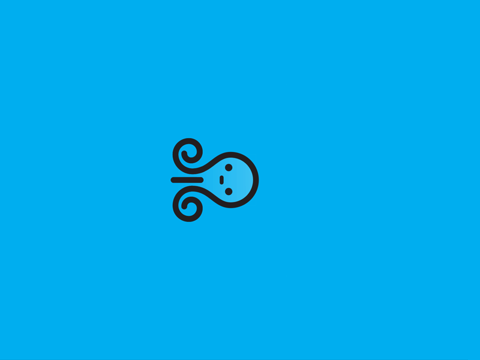
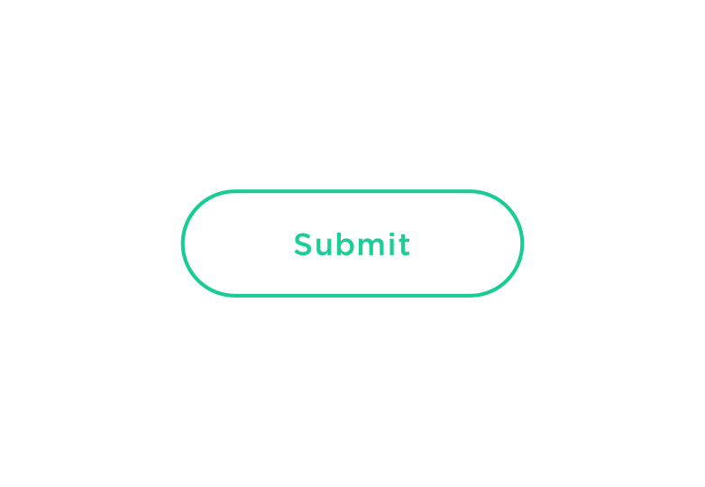

The Wonder That Is Web Animation
Web animations can be found on any user interface. This could be a wiggle of an icon you see on your smart phone. Or if you were visiting a website, you could see their company mascot strolling across the footer. The approach to creating web animations can save you a lot of time. Traditionally a gif is first created on Photoshop, then brought to life on Adobe After effects. Then imported onto a webpage. To save time, it is now possible to make the moving images using simple HTML, CSS and a sprinkle of Javascript.
CSS3 Animation
The main benefit of CSS3 animation is that every browser supports them.
Transitions: CSS Transitions give you the ability to perform a simple transition between two different states. Say you have a simple button that you want to change colours and push down slightly on hover, a transition would be perfect for this use-case.
Keyframe Animations: keyframes are a powerful CSS3 feature that allow you to create custom animation sequences. They allow you to control the timing and easing, the duration, any delay needed, how many times the duration repeats, which direction it animates and more. You can even declare multiple animations on an html element.

When waiting for a web page to load, you can often see a loading image like the above two until the page loads up. These are great for entertaining your visitors for a few moments. CSS is great for this as you can make a simple code and turn it onto a loop.

This stop watch IOS app pulls the elements of the image down and changes colour. They keep it simple as only a few elements change.

This Event website uses animation as the user scrolls through the page. This effect makes the page more interesting and will keep your viewers browsing through the pages.

Buttons on web pages and apps are something we can expect. Animating them can increase the users experience. When you click a button, for us to assume it has been clicked properly it should change to a different colour.